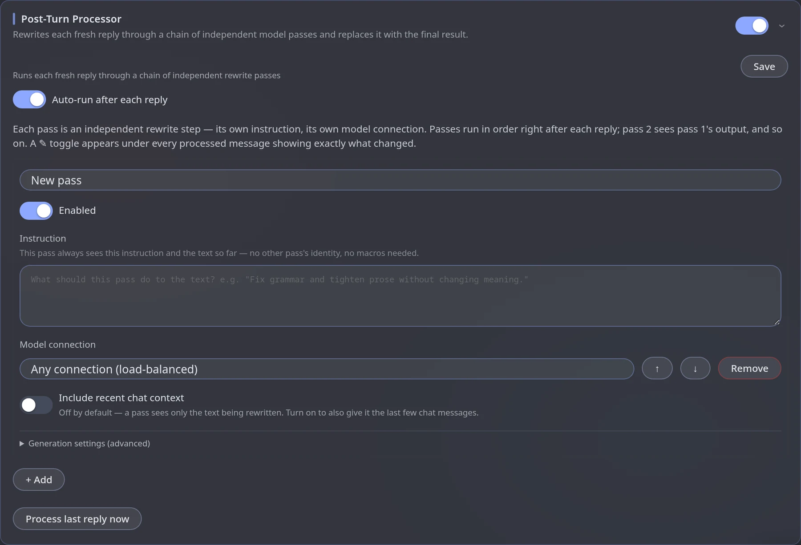

Post-Turn Processor
module.postprocessThe Post-Turn Processor takes each fresh reply and runs it through a chain of rewrite passes. Each pass is its own prompt and its own model; the final result replaces the reply in the chat.
remove clichés→Pass 2
fix style→Final reply
When to use it
- Strip the repetitive phrases and "AI-isms" a model keeps producing.
- Enforce a style (concrete sensory detail, varied rhythm, a specific voice).
- Check continuity against recent chat.
A pass changes the story for good. If it returns something shorter, longer or different, that is what stays in the chat — and a reroll is processed again. Always say what must stay unchanged (events, dialogue, length) in the instruction.
How a pass works
- A pass receives only the text produced by the previous step (the first one gets the fresh reply). Your message and the rest of the chat are not sent unless Include recent chat context is on.
- The pass Instruction is sent as the system prompt; the text to rewrite arrives as the user message.
- The engine itself appends "Return ONLY the rewritten text — no explanation, no markdown code fences, no commentary" to every instruction.
- A pass with no connection chosen is spread over any available one.
Set it up
Switch the module on
Engine panel → Modules → Post-Turn Processor.
Add a pass
Press + Add. A pass named New pass appears: write its Instruction — a proper brief, not a one-liner — and optionally pick a Model connection (the default is Any connection, load-balanced). Add more passes for more steps; ↑ / ↓ change the order, Remove deletes one.

Turn on auto-run
Nothing runs unless the module is Enabled, at least one pass is on with a non-empty instruction, and Auto-run after each reply is on. Otherwise only Process last reply now works.
Save
Save stores the chain.
After a reply is processed, a ✎ toggle appears under the message and shows exactly what changed.
Example passes
| Pass | Instruction idea |
|---|---|
| Cleanup | Remove clichés and filler phrases. Keep all events, dialogue and the original length. |
| Style | Replace vague descriptions with concrete sensory detail and vary sentence rhythm. Do not add events. |
| Continuity (with chat context on) | Fix details that contradict the recent messages. Change nothing else. |
Pass 2 sees the result of pass 1, so order matters.
Settings
| Setting | What it does |
|---|---|
| Passes | The chain, run in order after each reply. Each has its own Instruction and Model connection. |
| Include recent chat context | Off by default. On: a pass also gets the last few messages — useful for consistency edits. |
| Messages of context | How many recent messages (shown only when the toggle is on). |
| Auto-run after each reply | Process every fresh reply by itself. Off = by hand only. |
| Process last reply now | Runs the chain once on the latest reply; safe to press twice — an already processed reply is skipped. |
| Enabled | The whole module on or off. |
Tips for reasoning models
Reasoning models spend the token limit on thinking. For rewrite passes disable reasoning, or the answer gets cut off. Set max tokens to at least 2× the usual reply length — roleplay replies are commonly 300–1200 tokens, so 2000–4000 is safe.